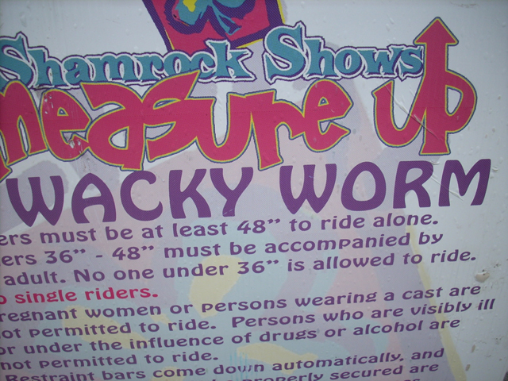
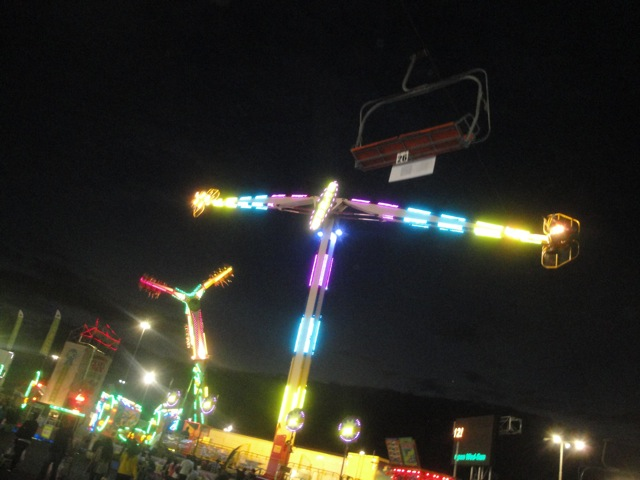
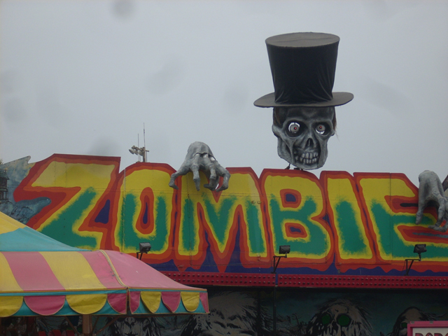
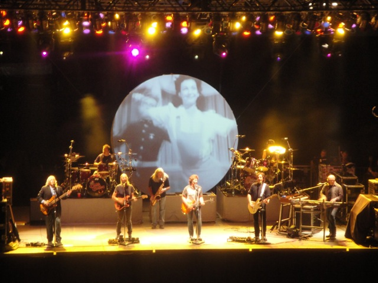

| |
American Fairs Review

All right. Here's my review of all the American Fairs (that I've been to). So far, I've been to the Ventura County Fair, the Santa Barbara Fair, the L.A County Fair, the San Diego Fair, and the State Fair. The San Diego Fair is the best of the bunch. The Ventura County Fair, which is my home fair, has seemed to be lacking over the years. Other larger fairs, such as the L.A County Fair and the San Diego Fair have more coasters, a wider variety of flat rides, and the best music acts. But I must admit, all of these Fairs have some good rides out there. Many of the rides that you see on our Top 10 Flat Rides list is located at these fairs. You just get so many crazy flat rides to choose from. So if you have a chance to get to any of these fairs in California, or anywhere else in the country, I'd recommend checking them out.
Rollercoasters
There is a link to a review of all the Rollercoasters that were at any American Fair at one point.
Top Coasters
Typhoon Review

Mediocre Coasters
Backdraft Review

Crazy Coaster Review

Crazy Mouse Review

Galaxy Review

Olympic Bobsled Review

Pole Position Review

Kiddy Coasters
Cobra Review

Little Dipper Review

Wacky Worm Review

Flat Rides
Here are the reviews of all the Flat Rides that were at any American Fair at some point. And considering that these are fairs, you know there are going to be a TON of flat rides to review. Well, lets get started with the best. Tango. This is one of the absolute best rides that they've got. This ride is just absolutely insane in every single possible way. Its a stand up floorless ride. So yeah. You're flaying around like a rag doll standing up in the air with nothing to stand on, flipping and rolling you all around at what feels like 100 ft in the air. Next up, there's the Zipper. While it can be meh and tame at some fairs, at others, it can be one of the craziest rides ever, giving you dozens of flips in a row over and over again before providing some sweet ejector air!! =) And then, we've got Speed. While it may not be the craziest flat ride out there, it can mimick X2's first drop, which automatically makes it awesome. All of these flat rides that I listed, are on my Top 10 Flat Rides list. ALL OF THEM!!!! And the best part of this, is that we're only getting started with the insane number of crazy flat rides at these American Fairs. We then have Experience, which is pretty much a sit down on the ground version of Tango =). And hey, that's all fine with me. We've also got Spin Out. This is basically a tea cup ride, only its spinning completely upsidedown!!! Ok, not completely upsidedown, there is some vertical movement to give it more excitement. But yeah. Its a nauseatingly good time. Ok, now lets move onto the Drop Tower. Yep, these fairs have a drop tower. Mega Drop. And man, for its puny size, this thing PACKS A PUNCH!!!! You get shoved down faster than gravity cause you FLY out of your seat!!! I love this ride. And I just don't have time to go over all the other stuff. All the frisbees, all the upside down swinging ships like Footlose, Mega Loop, and Kamakazie, those are fun. Hard Rock is awesome (but needs to get rid of the non-effective seat dividers), Techno Power is a fun scrambler on steroids, Windsurf is a fun Top Spin type ride, there's a starflyer, but it's puny, and then there's your classics. The ferris wheel, the fun houses, the merry go rounds, the house of mirrors, all that good stuff.
 One of the craziest flat rides out there.
One of the craziest flat rides out there.
Always will be the king of the carnival to me.

Currently the only flat ride that can mimick X2's first drop.
 Enjoying the blood rushing to your head? =)
Enjoying the blood rushing to your head? =)
Dark Rides
Here are the reviews of all the Dark Rides at the American Fairs. However, you should know that good dark rides require high quality anamatronics and high maintainence. Well, you should know that a county fair can't afford high quality anamatronics or have the time to take care of a Disney type of dark ride, so yep. These are all going to be crap. All these dark rides suck. Probably the best is Creep Show, and that's sh*t. But at least it has the spiral lifthill. Zombie, Avatar, and Haunted Mansion may be the most pointless peices of sh*t of all time. You go in a tunnel, which you can tell was made in an hour, the only thing they have is a few red lights that flash and a guy with a frankenstien glove at the end to scare you. I highly recommend you skip these if you're at the fair. ESPECIALLY IF YOU ARE USING TICKETS!!! THEY'RE A LOT OF TICKETS!!!

Click here if you dare to see just how sh*tty Zombie is.
Dining
Here are the reviews of all the Food Stands at American Fairs. AKA, how many foods can you deep fry. Deep fried foods. The ultimate staple of the carnival. And I've tried quite a few so far. My list consists of Deep Fried Twinkies, Deep Fried Oreos, Deep Fried Snickers, Deep Fried Nutter Butters, Deep Fried Watermelon, Deep Fried Cookie Dough, Deep Fried Ribs, and a Deep Fried Klondike Bar. Yeah, none of that stuff is healthy, but man is it all SO GOOD (Ok, maybe not the Deep Fried Watermelon)!! Seriously, I wanna make a Top 10 Deep Fried Foods list when I eventually try them all. They're just so good. And then the list of things that will give you a diabetic heart attack continues, lets start out with one of the most unhealthy things you can think of. A Frosting Shot. Yeah, this is nothing but frosting. And man, it is good, but its just too much. You feel so guilty and just want to run 10 miles just to burn off all the calories. Not recommend for fatasses (or anyone for that matter). There also is the famous Doughnut Burger. But...yeah. That sucked. Sorry. I know a Dougnut Burger sounds "WTF!?". But maybe it'd be good WTF! Nope! The doughnut burger tastes like the burger patty of a burger you'd get for school lunch while in High School, only with doughnut buns. And if you think that the doughnuts they use for the buns are fresh Krispy Kremes, Nope! The doughnuts taste more like the doughnuts you get in a box from the gas station. After they've gone stale. So when you have a crappy burger patty, and you combine it with two crappy doughnuts, then it's no suprise to report that the Doughnut Burger is naturally...well...crappy. And then you've just got the usual, hot dogs, corn dogs, hamburgers, pizza, ice cream, candy apples, chocolate covered bacon, funnel cakes, ice cream, ribs, sloppy joes, kababs, Pinks Hot Dogs, Bacon Wrapped Hot Dogs. Its all just fatty fried food!!! My oh my. Now I'm hungry. But seriously, you could be serving sauteed raccoon's assholes on a stick. And people would eat them!!! Especially if they were dipped in butter with a little bit of salsa on them. =)
 Pick something. Anything. And then lets deep fry it.
Pick something. Anything. And then lets deep fry it.
 Frosting Shot or Crack?
Frosting Shot or Crack?
Theming and Other Attractions
Here are the reviews of all the other stuff at American Fairs. Well, first off, lets talk about the concerts. Cause these places actually have good people playing at their concerts!!! Good bands actually play at these fairs. I saw Pat Benetar at the Ventura County Fair and the Doobie Brothers at the L.A County Fair. Both were awesome, and fairly cheap as well. I know at the Ventura County Fair, the shows are actually included with admission. So you go to the fair, and you can just go see Pat Benetar play for free. And the pricing at the L.A County Fair is fair as well. But seriously, having access to shows like this is reason enough to go to fairs like this. And aside from that, there's lots of animals, lots of exhibits, and some games that you can play and waste your money on.

Listen to the Music.
In Conclusion
American Fairs are just a ton of fun. As you can see, they have some of the sickest flat rides out there, as well as some insanely delicous (and unhealthy) deep fried food. So you can spend all day eating and riding until you throw up deep fried puke all over the midway. And to top it all off, they have awesome concerts, so you can see the Doobie Brothers and enjoy the night after the awesome day at the fair. Give an American Fair a visit. You'll enjoy it.
Tips
*Get a Wristband if you care about getting on rides. It will QUICKLY pay off!!!
*Have Fun!!!
Locations
Arcadia, California, U.S.A
Pomona, California, U.S.A
San Diego, California, U.S.A
Santa Barbara, California, U.S.A
Ventura, California, U.S.A
Last Day Visited
August 22, 2021
Complete Update List
2021
Raging Waters 2021
2019
Sea World San Diego 2019
2018
L.A County Fair 2018
2014
L.A County Fair 2014
2013
L.A County Fair 2013
2012
L.A County Fair 2012
2011
L.A County Fair 2011
Ventura County Fair 2011
2010
Santa Barbara Fair 2010
2009
Ventura County Fair 2009
2008
Ventura County Fair 2009
2007
Ventura County Fair 2007
2006
Ventura County Fair 2006
2005
Ventura County Fair 2005
Here's a link to the L.A County Fair's website.
Here's a link to the San Diego Fair's website.
Here's a link to the Santa Barbara Fair's website.
Here's a link to the State Fair's website.
Here's a link to the Ventura County Fair's website.
Home
|